why the program exists
Many organisations now have dashboards, MIS platforms, and robust reporting systems. Yet the ability to interpret and act on the information often stays with a small number of MEL or data specialists at best. Teams are unsure how to separate important patterns from anecdotal evidence, use insights to inform programme decisions, or decide when AI output can and cannot be trusted when it comes to data.
The Data Literacy Program teaches skills that are
practicalrelevanttransferable
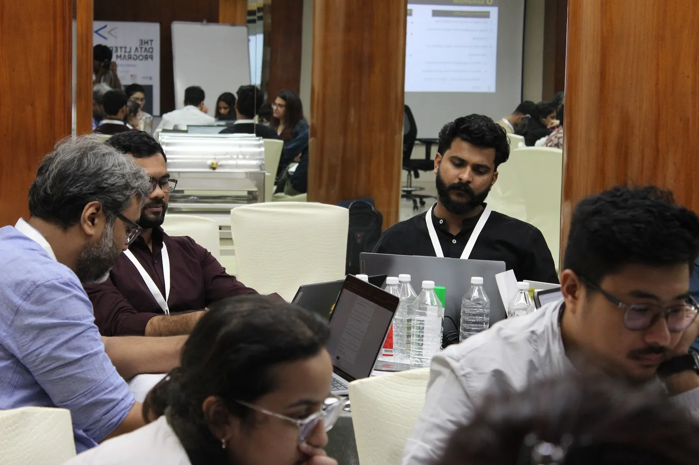
Cohort 2 · October 2025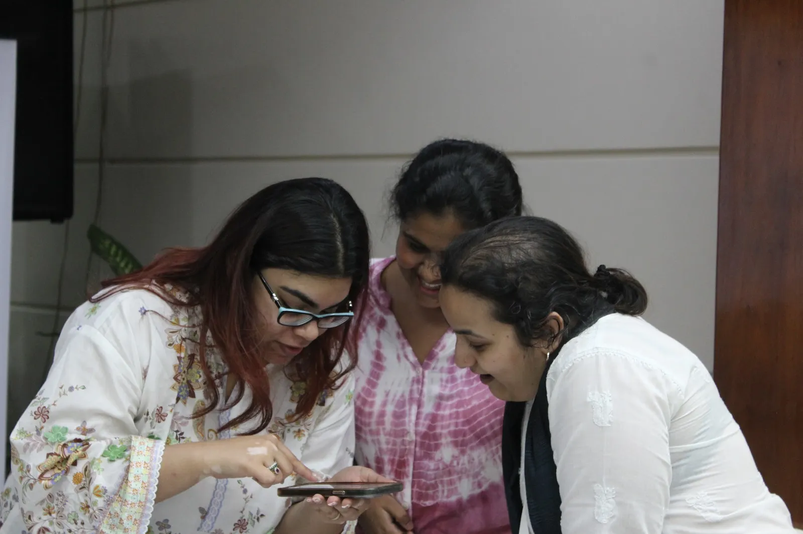
Who you nominate
Each organisation nominates two team members.
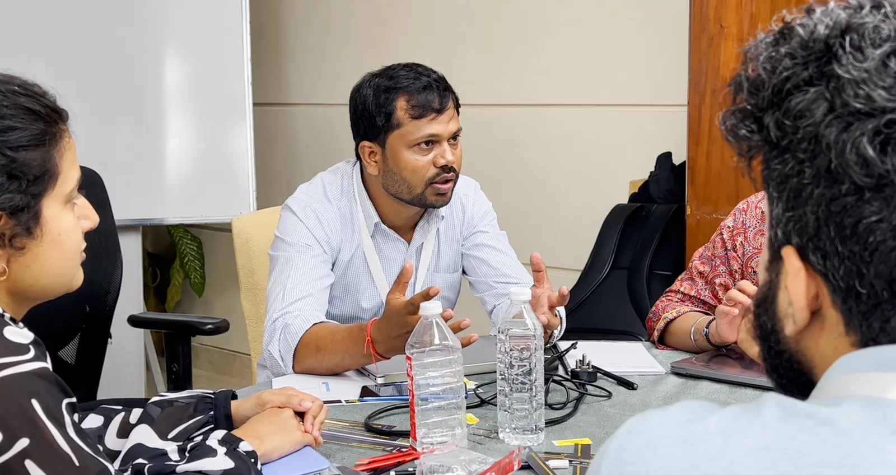
Program Leader One senior organisational or programme leader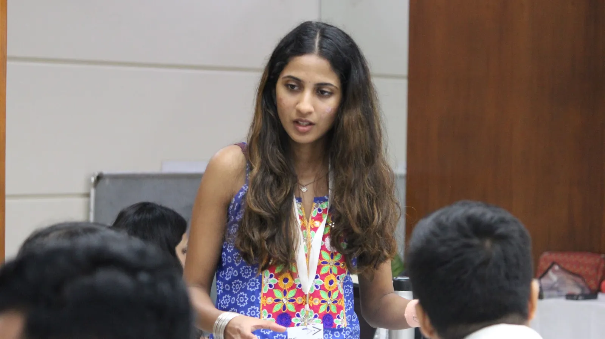
MEL team member One mid-senior MEL team memberTogether, they combine organisational influence with measurement expertise and share ownership of the internal rollout.
who the program is for
what participants learn
how ai is integrated into the program
Participants learn to use everyday AI tools responsibly, keeping foundational data skills, verification and human judgement at the centre. Every skill follows the same three steps.
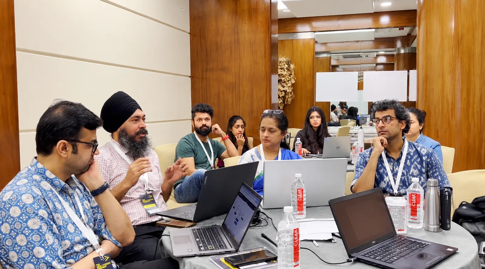
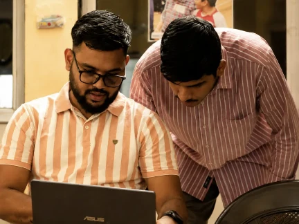
evidence from previous cohorts
In my 18 years of experience in research and M&E, I have never seen such a detailed training being conducted. I got confidence and a lot of resources to use, which we can easily contextualise to our organisation back in Punjab.
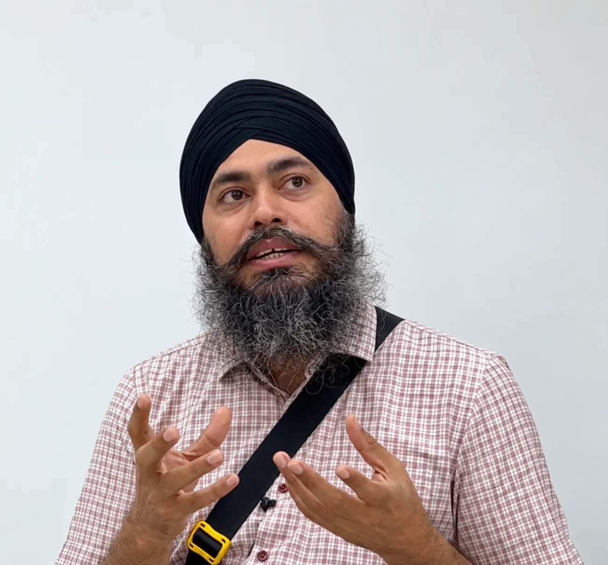
Perwinder SinghSanjhi Sikhiya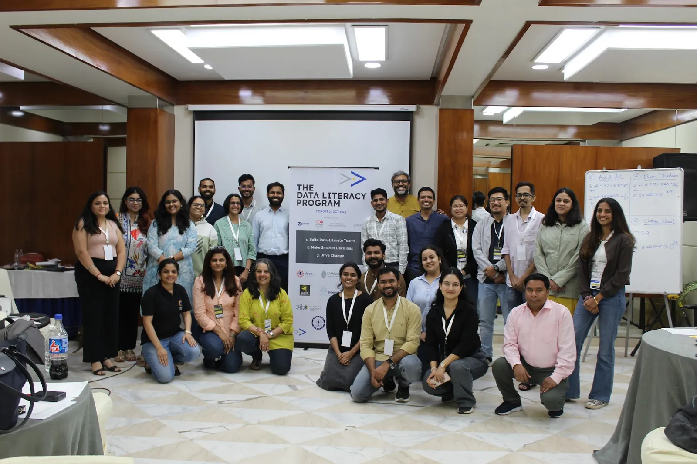
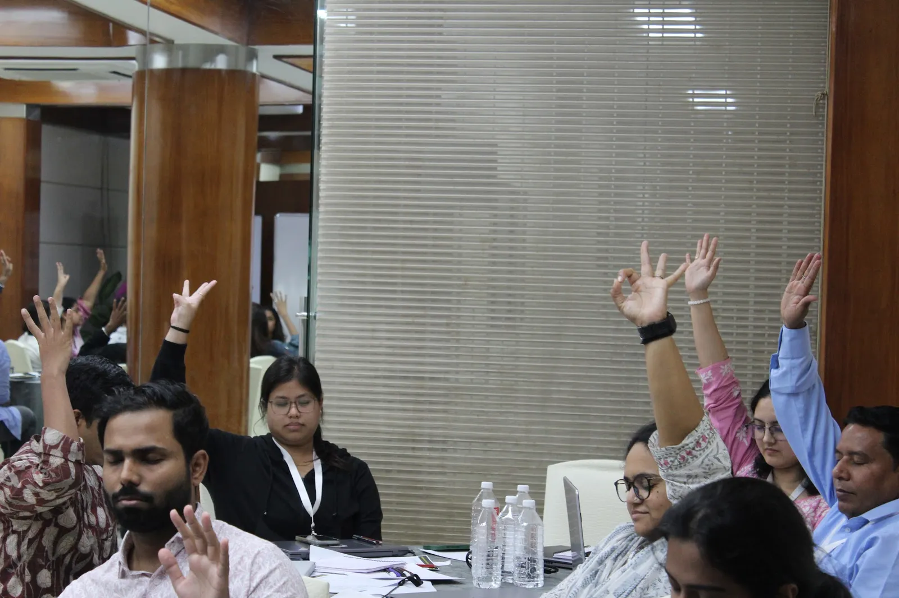
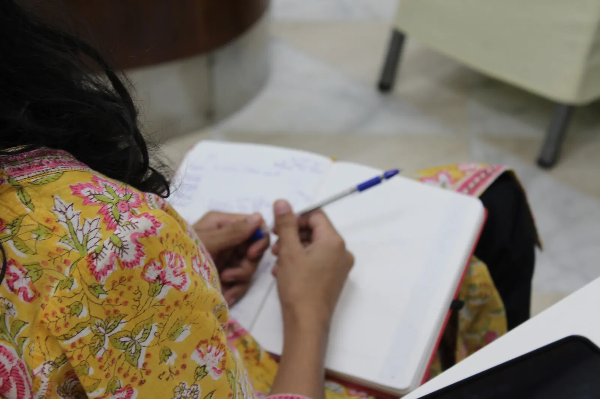
frequently asked questions
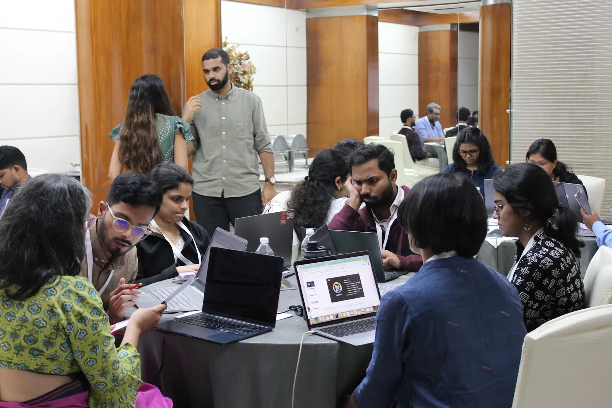
Equip leaders within your organisation to build confidence, strengthen everyday data use and help colleagues across roles make more data-driven decisions.